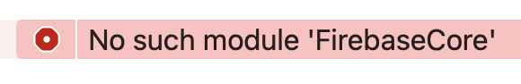
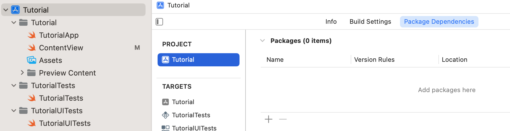
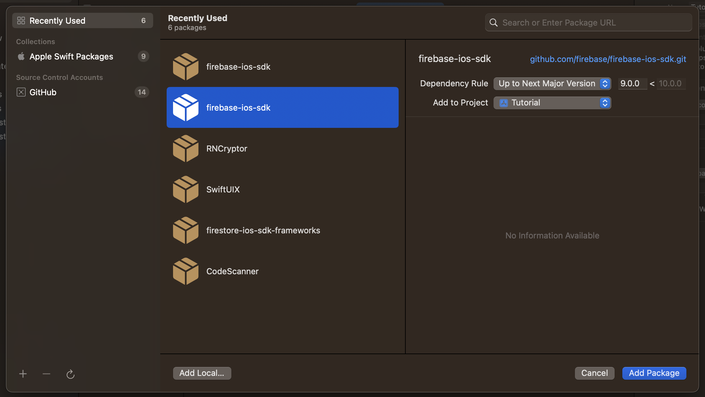
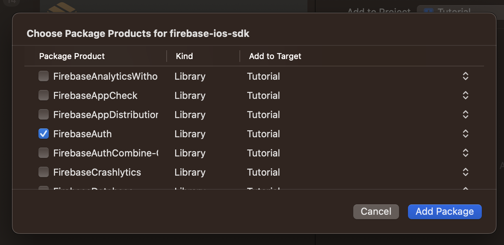

Firebase is a service from Google that allows for some awesome oppurtunities in apps! It offers real-time databases, a fully working authentication system, crash analytics, online storage and so much more! One of my favourite services from Firebase is Firestore, a real time database that works quite well with Swift!
In this part of the tutorial, I'll explain how to setup Firebase with Swift, and will explain how to use Firebase Auth and Firestore in the coming few blogs. Ready? Let's go!
import FirebaseAuth
import FirebaseFirestore
import FirebaseCore
class FirebaseManager: ObservableObject {
func signIn(_ email: String, _ password: String) {
// Sign in using Firebase Auth
}
func addDataToFirestore(collection: String, document: String, data: [String:Any]) {
// Add data to Firestore
}
}
In order for Firebase to work with SwiftUI, it is best that all our functions are in a class inheriting ObservableObject. Write this code in a new file named 'FirebaseManager.swift' and switch back to ContentView.swift to get ready for the next step.
import FirebaseCore
struct ContentView: View {
init() {
FirebaseApp.configure()
}
var body: some View {
Text("Hello, world!")
}
}
In ContentView, import FirebaseApp and put the init function in the struct. This initialises Firebase in your app. However, you may have noticed an error while writing this code:
Well, let's install it! Copy this GitHub link (https://github.com/firebase/firebase-ios-sdk.git) and head back to Xcode.
We are going to install Firebase from the Swift Package Manager (SPM). To access it, go into your project in the left panel, and open Package Dependencies like in the image. Press the plus icon, ready to add a new package: Firebase.
Once you see a similar popup to the above, paste your previously copied link (which has the goodies we want!) into the search box and click Add Package. If this is your first time installing Firebase, it will take a couple minutes 'verifying' and 'checking out' the GitHub repository. Before installing, make sure the Dependency Rule is Up to Next Major Version to keep it simple.
After a bit, you should see this popup. For this tutorial, select 'FirebaseAuth' and 'FirebaseFirestore', but you may want to select more in your own app depending on what you will need. Once you're ready, hit Add Package and, if all went well, you should now have Firebase installed!
The next thing to get done is to create your Firebase project and connect it to your iOS app. Until then, Happy New Year everyone, and happy coding!